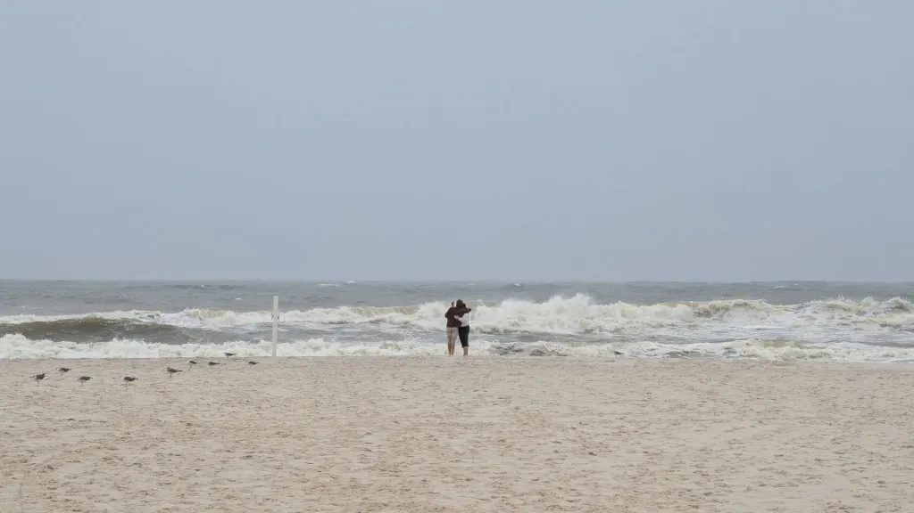
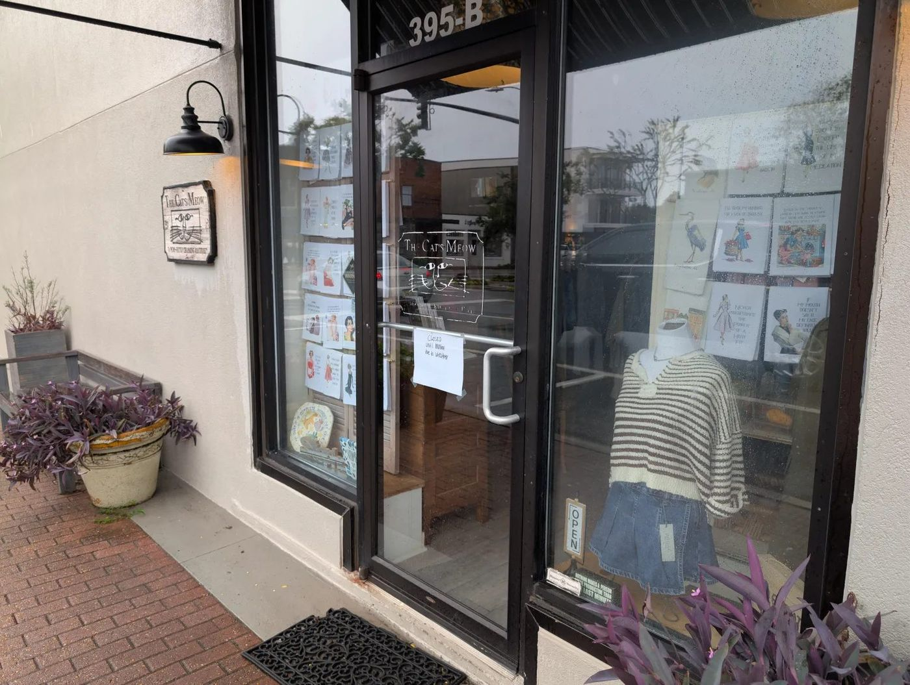
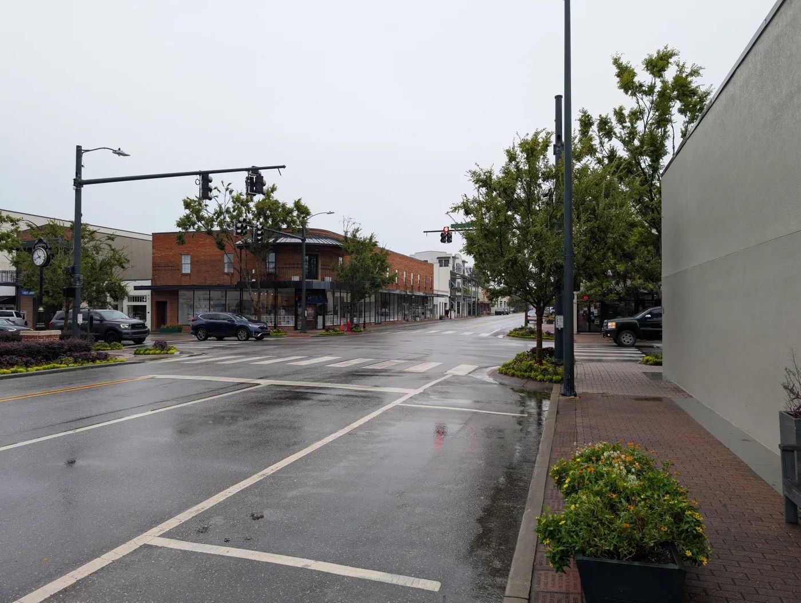
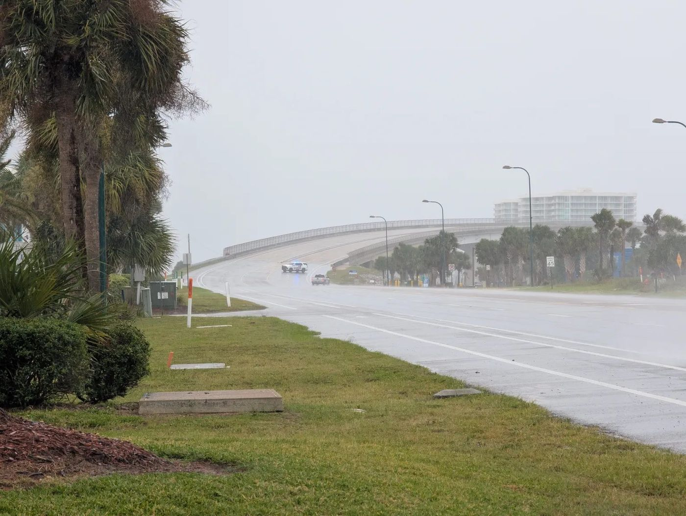
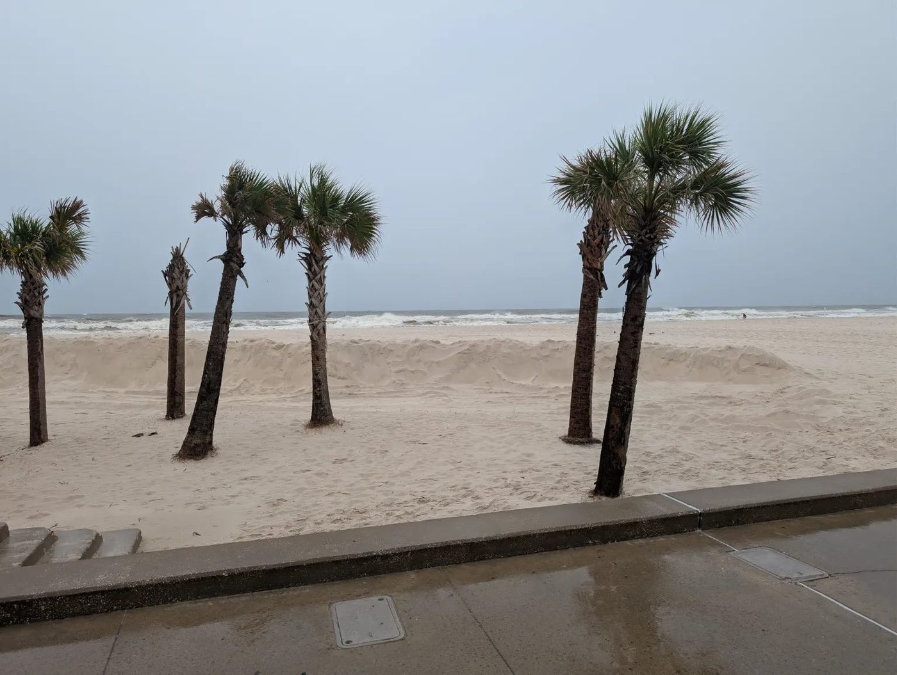

Ahead of Hurricane Isaias, worry on the Alabama coast grows by the mile

GULF SHORES, Ala. — Children in Daphne, Alabama, spent their day off school Friday playing in a creek as the first rain bands of Hurricane Isaias moved over Baldwin County.
An hour south in Gulf Shores, the vibe was much different. Two Waffle Houses sat with their lights on and no one inside. Double red flag signs were posted all over empty beaches, as the high-rise resorts faded into a gray haze.
Isaias is expected to make landfall along the northern Gulf Coast Friday evening with winds as high as 120 mph, threatening Pensacola, Florida, and the Alabama beach towns of Gulf Shores and Orange Beach. But hours before the storm’s arrival, how seriously Baldwin County residents were taking it depended on how far south they lived.
Business as usual
At 10:15 a.m. in Spanish Fort, Straight Arrow began its 70-plus mile trip to see how people along the Alabama Gulf Coast were preparing for the storm. The roads were as busy as on any weekday morning. Rain fell lightly and the wind had yet to pick up.
Along U.S. Route 98, Waffle Houses were serving. Utility trucks sat at gas station pumps. No boarded-up windows were in sight. In Fairhope, the Wawa and Publix parking lots were full, and a man was taking down a hanging shop sign. Downtown boutiques stayed open, though some planned to close early.
One was Fairhope Pharmacy, which has stood on the same corner since 1916 and had its windows blown out by Hurricane Frederick in 1979. An employee who has lived in Baldwin County since that year and who didn’t want to be identified told Straight Arrow that longtime locals aren’t as worried as people who recently moved in. At Walmart, where she picked up bread and peanut butter, she said the bread and Gatorade shelves were empty and newcomers’ carts were full.


For many of those newer residents, Isaias is a first. The county’s last direct hit was Hurricane Sally, a Category 2 storm, six years ago. The woman said Sally turned out to be worse than expected, and that it pays to prepare no matter how relaxed the locals seem. Some people fill their bathtubs in case the water goes out, she said, and she has heard of others packing bags of ice into the washing machine.
On the Fairhope Pier, a few people strolled through the light rain. The chop carried the smell of the bay, and pelicans and seagulls hunted for one last meal before the storm arrived.
Trouble on the horizon
South of Fairhope, U.S. Route 98 bends east toward Foley, and that’s where the first signs of worry appeared. A manufactured home had plywood over its windows, and a tattered American flag and Confederate flag flapped from the pole out front.
Still, life went on along the highway. Boggy’s Buffet had its open sign lit, and a bearded man walked back from a gas station carrying a fountain drink.
In Foley, the coverings multiplied the farther south the road went: plywood, sheet metal and, most often, beige fabric storm panels. In the Foley Point neighborhood, beside a solar farm, most homes were covered shut, but cars still sat in the driveways, a sign their owners planned to ride it out. Plenty of other homes had no protection at all.
Businesses mostly stayed uncovered and open, though quieter than those to the north. A sports bar had a decent crowd, and the liquor stores were doing business. Only a few small shops had boarded up.
On state Highway 59 toward Gulf Shores, roughly three cars headed north for every one going south. No police were turning drivers around, a common practice when road conditions are dangerous.
A beach ghost town
The mood changed after crossing the W.C. Holmes Memorial Bridge. Gulf Shores, usually crowded with beachgoers, had become deserted, with its high-rise resorts disappearing in the clouds.
At The Hangout, a handful of people photographed the rough surf while TV crews from as far away as Birmingham, nearly 300 miles from the coast, set up live shots. Souvenir City, with its iconic shark-mouth entrance, was dark.
Along Beach Boulevard, the main road to Orange Beach, nearly everything was shut. Sheet metal covered a Hooters and a CVS, where sandbags lined the doors. Even the Waffle Houses, a chain famous for staying open through the worst weather, were closed. Another restaurant’s sign read, “Closed for Hurricane Isaias. Stay Safe.”


The resorts and condos that hold hundreds of families on a normal day were empty, and some rentals directly on the beach had no window protection at all. Boats sat dry-docked. At Gulf State Park, the piers were still open at noon, and a few people had come to watch the water.
By then the palms were swaying, and rain was pooling on a road with almost no cars left on it. The drive ended at Perdido Pass Bridge, where an Orange Beach police officer was turning traffic around.
The drive back
The storm became apparent on the return trip. A palm branch blew across the road, and the trees and lampposts swayed. A crew farther up the road was already working on a utility pole that had bent in the winds.
Police, nearly absent an hour earlier, were suddenly everywhere. Gulf Shores officers and Baldwin County deputies were parked along the highway with their lights on, and officers prepared to close the bridge onto the barrier island.
North of the bridge, around 12:40 p.m., traffic was heavier than it had been all morning. Signs on several businesses said they were closing at noon or 1 p.m. Culver’s and Cracker Barrel were packed, and a Burger King drive-thru line stretched nearly to the road. Rain pooled on the highway, and wind pushed cars toward the next lane.
The urgency faded farther north. Two people finished a round of disc golf and a teenager in pajama pants rode an e-scooter through the rain.
By 1:30 p.m. in Spanish Fort, rain fell as only a light shower. Utility trucks filled the gas stations, fueling for a night of likely outages. An elderly couple sat in their garage watching the rain, and the children were still playing in the creek.
The winds had started to pick up there by midafternoon, but Isaias was still hours away.
This story was originally published by Straight Arrow News on Oct. 9, 2026. Straight Arrow News shut down in November 2026, and I’ve republished my reporting here so it stays available. Photos from the original story are not included unless noted.
See the archived original on the Wayback Machine ↗